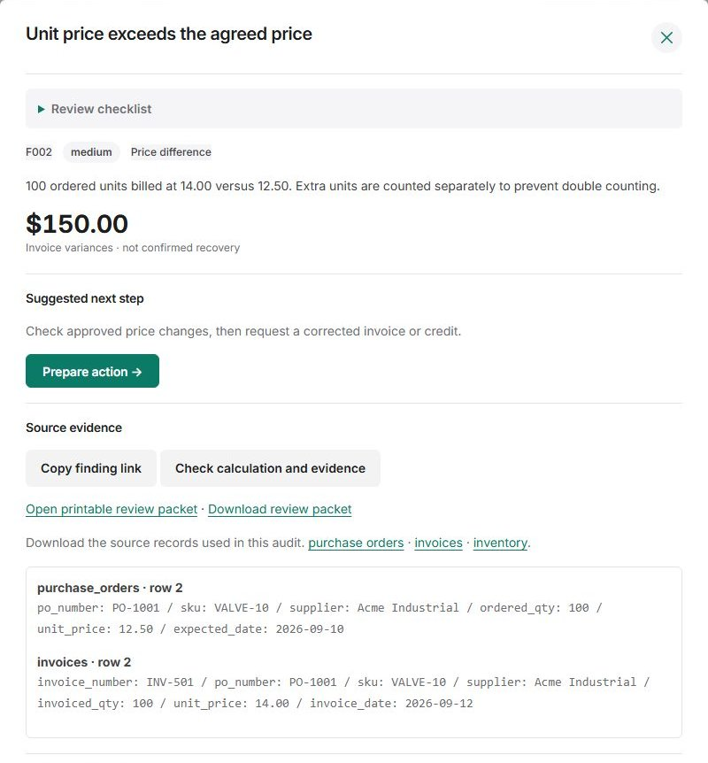
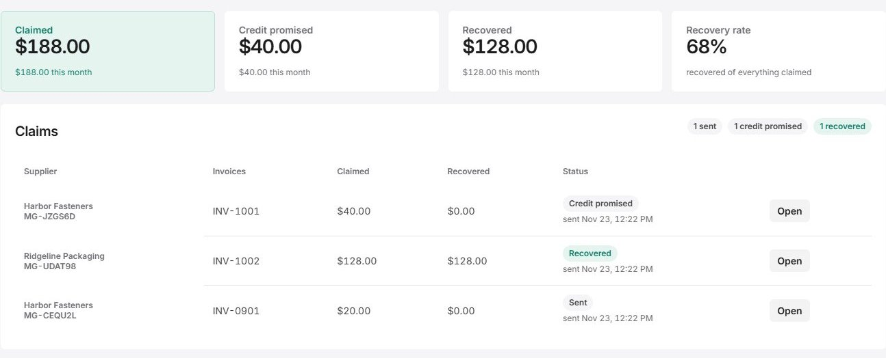
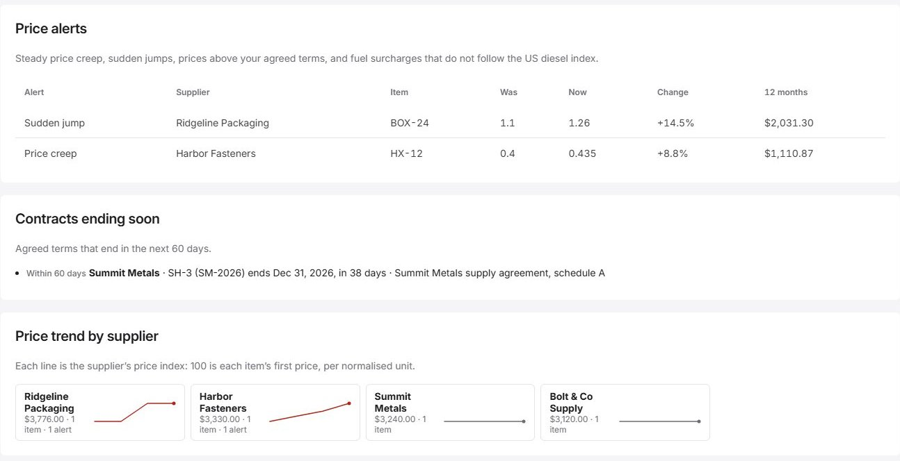
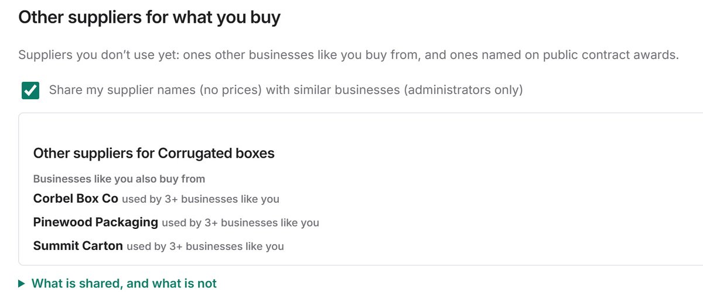
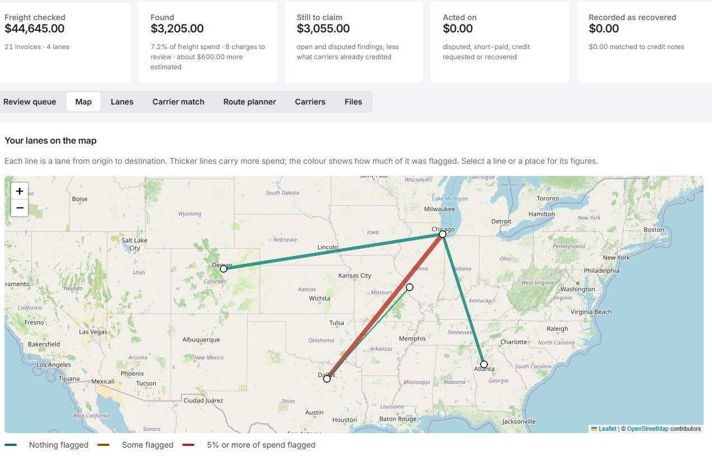
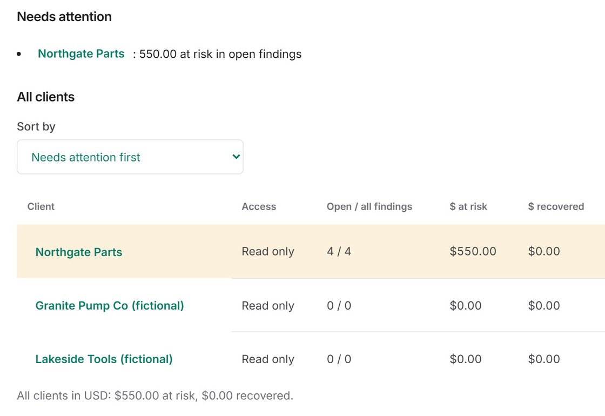
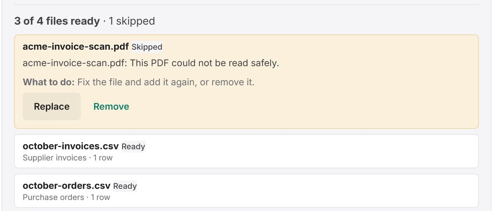

Every check is a fixed calculation over your own records. Each one runs when your files have the columns it needs, so adding receipts, payment records or bank details switches more of them on.
How MarginGuard works
Free during early access. No card, and the scan needs no account.
MarginGuard reads each supplier invoice against your purchase orders and receipts, and shows you every difference with the rows behind it. In the three sample files here, that is a valve billed at $14.00 against an order at $12.50, fifty-five pumps billed when forty-eight were kept, and one invoice line sent twice.
Run a free scanDrop in supplier invoices and purchase orders as spreadsheets, CSV exports or e-invoice files. Free-scan files are checked in memory and not stored.
Your records are in black. Everything in colour is MarginGuard’s.
supplier-invoices.csv3 lines
InvoiceOrderItemQtyUnit price
2INV-501Acme Industrial · 12 Sep 2026PO-1001VALVE-1010014.00a
Price above the order
The order says 12.50. 100 × 1.50 = 150.00
3INV-502Northstar Parts · 15 Sep 2026PO-1002PUMP-2055b80.00
Billed, not received
50 arrived, 2 went back: 48 kept. 7 × 80.00 = 560.00
4INV-502cNorthstar Parts · 15 Sep 2026PO-1002PUMP-205580.00
Line billed twice
Row 3 again. Its 4,400.00 waits until you check whether both were paid.
purchase-orders.csv2 lines
OrderSupplierItemQtyPrice
2PO-1001Acme IndustrialVALVE-1010012.50a
3PO-1002Northstar PartsPUMP-205080.00
Likely overpaid$710.00
Needs a look$4,400.00
agrees with the order and the receipts
receipts.csv3 lines
ReceiptOrderItemQty
2GRN-301PO-1001VALVE-10100received
3GRN-302PO-1002PUMP-2050breceived
4RTN-303PO-1002PUMP-202breturned
Sample files: purchase orders, supplier invoices, receipts (CSV). Acme Industrial and Northstar Parts are fictional. The marks and both totals are what the free scan returns for these files when the receipts are marked complete.
Find overcharges
| Check | Flags a line when | Needs |
|---|---|---|
| Unit pricea | The billed price is above the price on the purchase order or contract | Orders or a price list |
| Quantityb | More units are billed than were received, after returns | Orders and receipts |
| Duplicate linesc | The same item and amount appear more than once | Invoices |
| Tax | Tax is above the line’s own rate, or above the rate the supplier usually charges | Tax columns |
| Freight | Freight is above the amount on the order, or charged twice for one order | Freight columns |
| Bank details | A supplier’s bank account changes, or two suppliers share one account | Bank columns |
| Payment terms | The due date is at least five days sooner than the supplier’s usual terms | Invoice history |
| Payments | An invoice is paid twice, paid above its amount, or paid while a finding is still open | Payment records |
These three are marks a, b and c in Exhibit 1.
Bank accounts are shown by their last four characters only.
Also in the workspace: how long stock may last and where you hold more than your target, supplier offers compared on cost and timing, and a record of what you decided, with what happened next.
What a finding looks like
A finding is not proof. It means two of your records disagree, and there may be a reason: a price rise agreed by email, or a receipt that hasn’t been entered yet. So every finding shows its working, and you check the source rows before you take it to the supplier.
From there you can print a review packet for whoever signs off the claim, or start the claim itself.

- What differs, in one sentence.
- The amount. It isn’t counted as recovered until you say so.
- What to check before you raise it.
- The order row and the invoice row, as they were imported.
Pay gate
Before a payment run, each unpaid invoice is marked Clear, Hold or Blocked, with the reason and the money at stake. Each line is matched to its order and to what arrived, so short or missing deliveries are held too.
The payment file for your bank lists only cleared and approved invoices.

- Ready, waiting and stopped, with the money in each.
- The file for your bank.
- BlockedThe payment records show it was already paid in full.
- HeldBilled at 1.26 against an order at 1.10. Someone approves or rejects it, with a note.
Recovery
InvoiceDateUnitsOrdered atBilled atAbove the
order, $What happened
order, $What happened
HX-12, hex bolt · Harbor Fasteners
INV-08016 Aug2,0000.4000.400–
INV-09014 Sep2,0000.4000.41020.00Claim sent. No reply yet.
INV-10015 Oct2,0000.4000.42040.00Claim sent. Credit promised.
INV-11016 Nov2,0000.4000.43570.00Heldbefore payment, in Exhibit 3.
BOX-24, box · Ridgeline Packaging
INV-08026 Aug8001.101.10–
INV-09024 Sep8001.101.10–
INV-10025 Oct8001.101.26128.00RecoveredCredit note CN-4471 came back.
INV-11026 Nov8001.101.26128.00Heldbefore payment, in Exhibit 3.
Billed above the order386.00
of which, held before payment198.00
recovered by credit note128.00
credit promised40.00
still to chase20.00
Start a claim from any finding, check the letter, and send it from your own mailbox or from MarginGuard’s. The supplier’s reply and its credit note are attached to the claim.
The audit overview keeps a running total of what was found, what you raised with suppliers, and the credits or refunds you recorded. Each finding is counted once.
Nothing counts as recovered until you confirm it.

- Claimed, promised and recovered are kept apart.
- The supplier’s reply and credit note CN-4471 sit with this claim.
Price trends
Price trends follows each supplier’s prices over time and flags slow creep, sudden jumps of 10% or more, prices above your contract and contracts that end soon, ranked by what they could cost you over the next 12 months.
A draft email to start the conversation is ready to copy. MarginGuard doesn’t send it.

- The two items in Exhibit 4: the box that jumped and the hex bolt that crept, each with what it could cost over the next 12 months.
- An agreed price list that ends within 60 days.
- Each supplier’s prices over time.
Cost insights
Reads the invoice lines you have already saved. Nothing extra to upload.
- why spend moved over 30, 60 or 90 days: price, volume, new and dropped items
- the items with the largest price changes
- a 90-day price trend for each item, and sudden price jumps on the latest invoice
- how much of your spend sits with each supplier
- items you buy from only one supplier
| Cause | Change, $ |
|---|---|
| Price changes | +3,420 |
| Buying more or less | −1,150 |
| New items | +880 |
| Dropped items | −410 |
| Total change | +2,740 |
Suppliers
Turn on sharing to see how your prices for 16 common items, such as flour, diesel and gloves, compare with at least 10 similar businesses, and which suppliers at least 3 businesses like you buy from. No names, invoice numbers or item codes are shared.
MarginGuard also shows suppliers that already charged you less on your own invoices, and UK public-contract suppliers, labelled as not checked.
Sharing is off until you turn it on.

Freight
Carrier invoices are checked the same way as supplier invoices. Upload them as CSV; shipment records and agreed rates are optional and unlock more checks.
Dispute letters are drafted for each carrier. You copy them and send them yourself.
- duplicate shipments and repeated extra charges
- linehaul and fuel surcharge above the agreed rate
- billed weight above shipped weight
- lanes on a map, by spend and share flagged
- lanes where another carrier you already use cost less

- Checked, found and still to claim.
- Each line is a lane. Thicker lines carry more spend, and red means 5% or more of it was flagged.
Accountants
Accountants and bookkeepers set up a firm and get a code. Each client enters it to grant read-only access or “may act” access, and can revoke it at any time.
The firm dashboard shows every client’s open findings, money at risk and money recovered, and flags who needs attention.
A client can take the access back at any time.

Any file in
It reads spreadsheets, CSV exports, PDFs, scanned invoices and e-invoice files, including exports from Tally, QuickBooks Online, Zoho Books and Xero. You match the columns when you import, so your files don’t need a fixed layout.
In an account, spreadsheets and CSV exports can be up to 25 MB and 50,000 rows each, with up to 12 files in one upload. If a file can’t be used, the message names the file and says why, and the audit starts with the rest.
Anything the reader isn’t sure of is marked “needs a look” and never counted.

How the free scan works
Drop your files
Supplier invoices and purchase orders as spreadsheets, CSV exports or XML and JSON e-invoices, including exports from Tally, QuickBooks Online and Xero. Add goods receipts if you have them.
See your total
Prices, quantities, items billed but not received and invoices sent twice are checked. You see how much you likely overpaid, a separate amount that needs a look, and counts by type. Nothing is stored unless you create an account.
Open the evidence
Create a free account and your scan is kept: it becomes your first audit, with each invoice, the rows behind every claim and claim letters. New accounts join a short waitlist, and your scan waits for you until yours is open. Accounts also check payments, credit notes and contract prices.
The two totals in Exhibit 1 are step two for the sample files.
Sample files
See the column layout before you export anything. Each file has a few fictional rows. Your own files can use different column names; you match them when you import.
The first three are the files in Exhibit 1.
| File (CSV) | Needed for |
|---|---|
| Supplier invoices | Required |
| Purchase orders | Required |
| Receipts and returns | Optional |
| Stock levels | Optional |
| Freight invoices | Freight audit |
| Shipment records | Freight, optional |
| Agreed carrier rates | Freight, optional |
What it doesn’t do
It doesn’t pay anyone. The payment file lists what you cleared. Your bank does the rest.
It doesn’t write to suppliers on its own. Claim and dispute letters are drafts. Nothing goes out until you send it.
It doesn’t decide for you. A person approves each decision in the workspace. An optional AI assistant can explain the evidence or find a past review, and it can’t approve anything.
It doesn’t guess. Findings come from fixed rules you can read in the finding itself. What the document reader can’t make out is marked “needs a look” and left out of the total.
It doesn’t call a finding proof. A finding means two of your records disagree. You check the originals first.
It doesn’t keep free-scan files. They are checked in memory and not stored. Files you upload to an account stay in your workspace, which other customers can’t see.
Download a copy of all your data, or delete your account and its audits, yourself, at any time.
Every sign-in needs a code as well as your password. An authenticator app or a passkey is optional.
Only upload records you have permission to use.